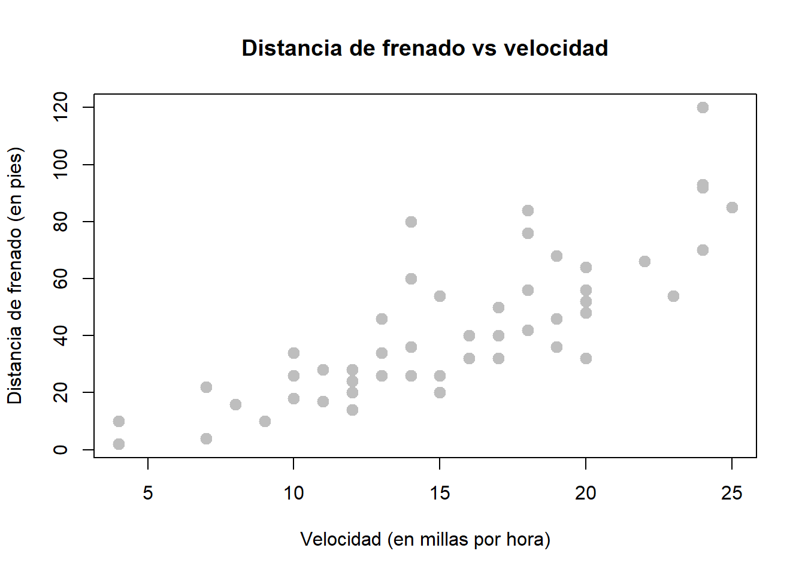
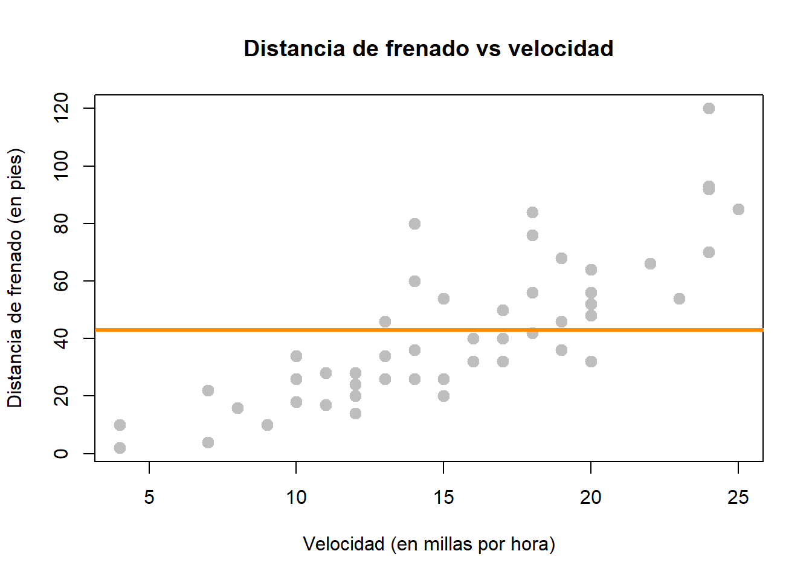
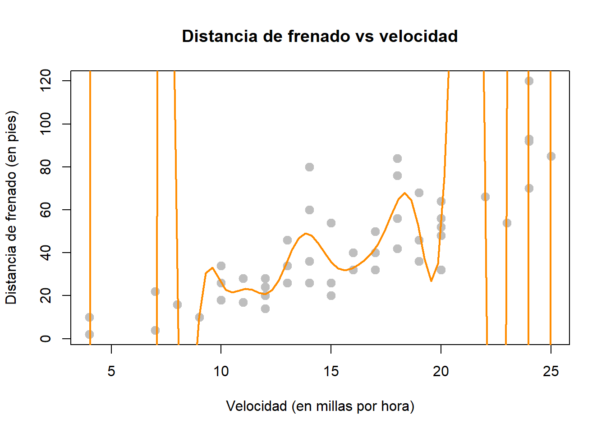
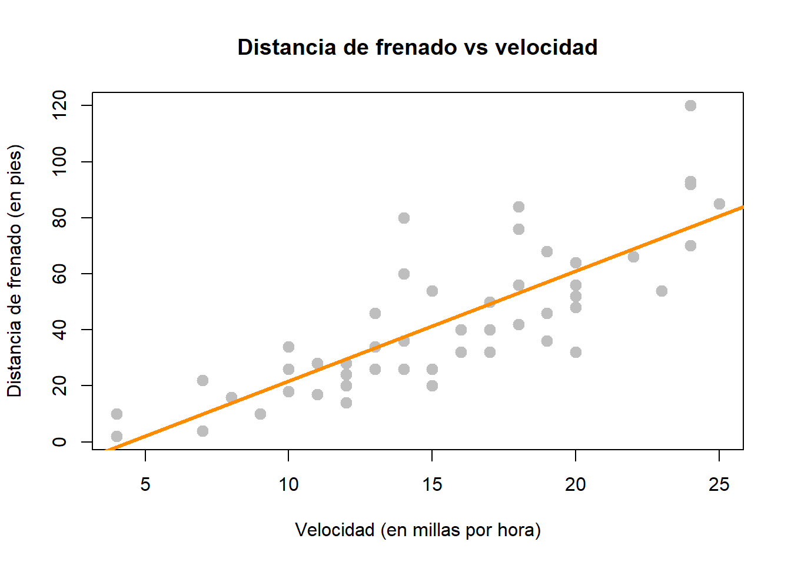
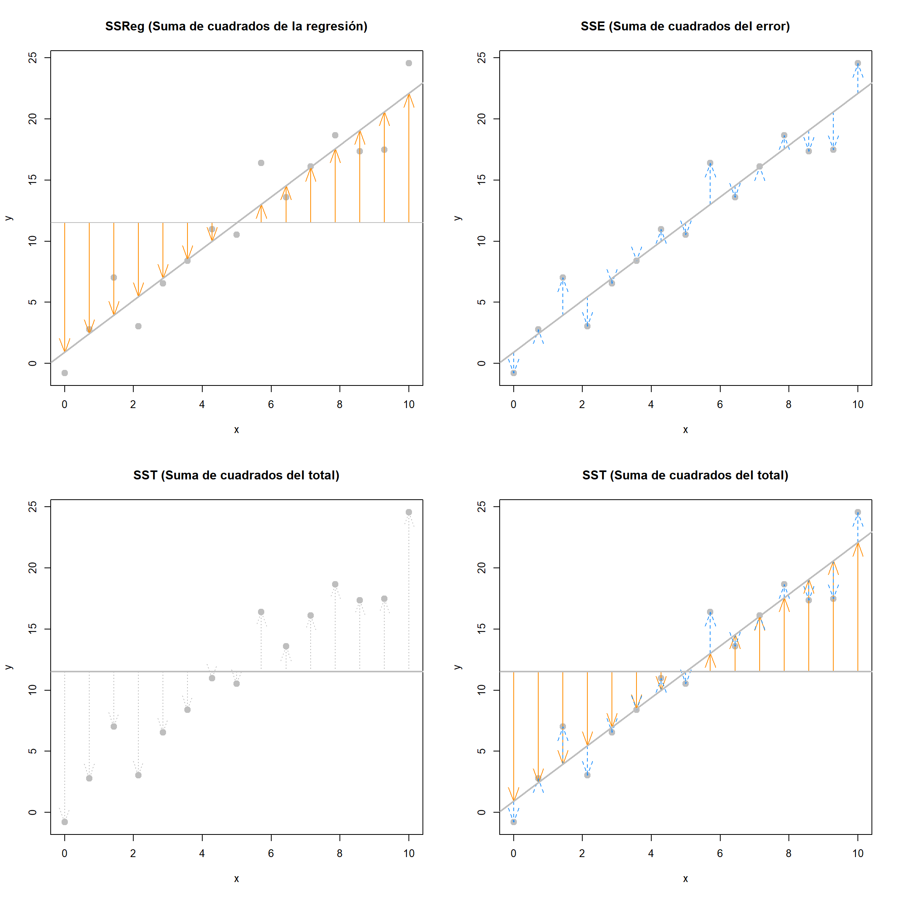
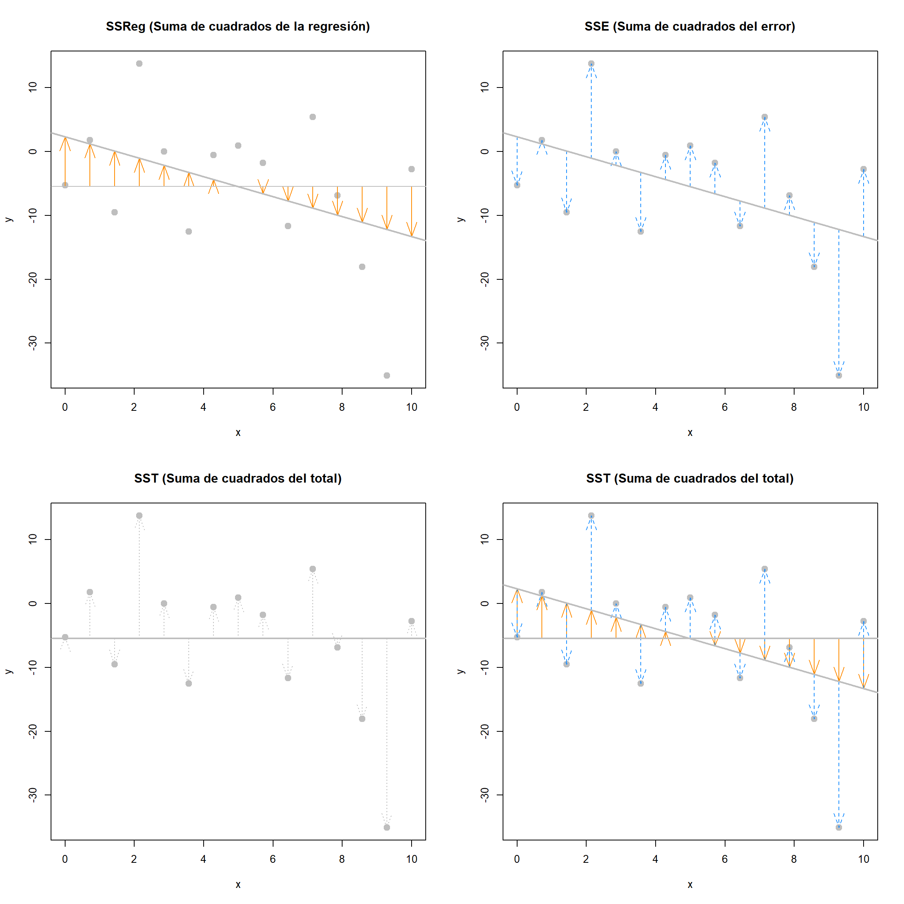
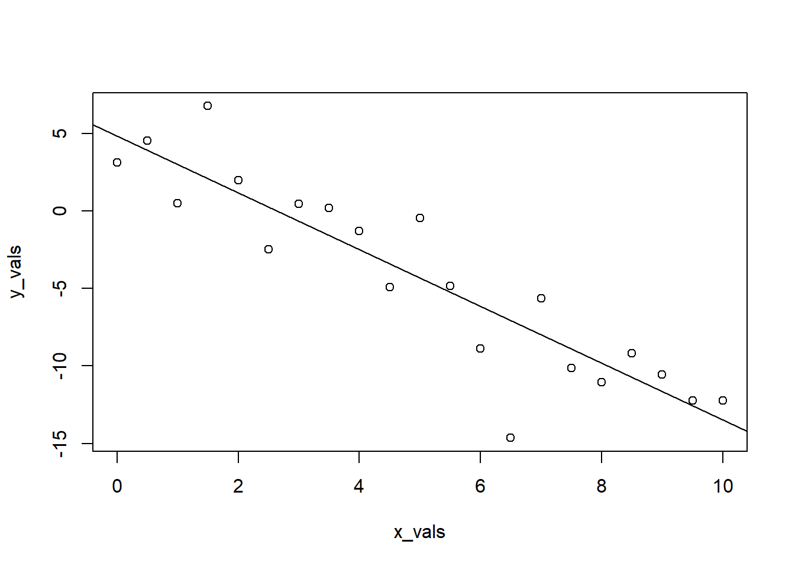
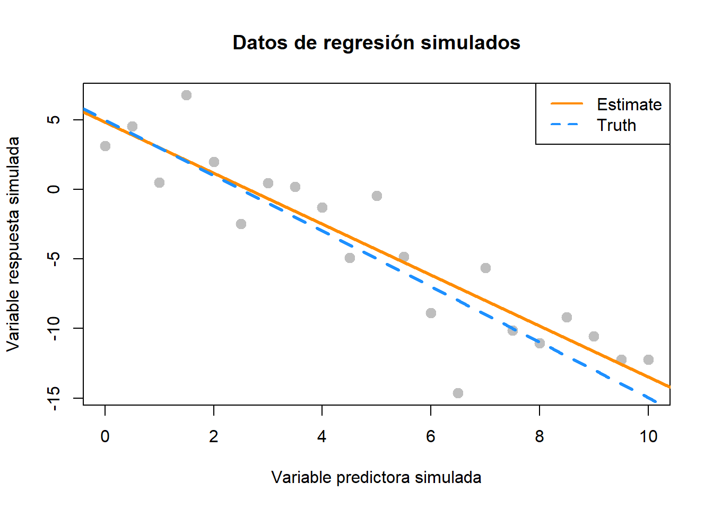

Capítulo 12 Regresión lineal simple
“Todos los modelos son incorrectos, pero algunos son útiles..”
— George E. P. Box
Después de leer este capítulo, podrá:
- Comprender el concepto de modelo.
- Describir dos formas en las que se derivan los coeficientes de regresión.
- Estimar y visualizar un modelo de regresión usando “R”.
- Interpretar coeficientes de regresión y estadística en el contexto de problemas del mundo real.
- Utilizar un modelo de regresión para realizar predicciones.
12.1 Modelado
Consideremos un ejemplo simple de cómo la velocidad de un automóvil afecta su distancia de frenado, es decir, qué tan lejos avanza antes de detenerse. Para examinar esta relación, usaremos el conjunto de datos cars que es un conjunto de datos predeterminado de R. Por lo tanto, no necesitamos cargar un paquete; está disponible de inmediato.
Para echar un primer vistazo a los datos, puede usar la función View() dentro de RStudio.
View(cars)También podríamos echar un vistazo a los nombres de las variables, la dimensión del marco de datos y algunas observaciones de muestra con str().
str(cars)## 'data.frame': 50 obs. of 2 variables:
## $ speed: num 4 4 7 7 8 9 10 10 10 11 ...
## $ dist : num 2 10 4 22 16 10 18 26 34 17 ...Como hemos visto antes con los marcos de datos, hay una serie de funciones adicionales para acceder directamente a parte de esta información.
dim(cars)## [1] 50 2nrow(cars)## [1] 50ncol(cars)## [1] 2Aparte de los dos nombres de variables y el número de observaciones, estos datos siguen siendo solo un montón de números, por lo que probablemente deberíamos obtener algo de contexto.
?carsAl leer la documentación, nos enteramos de que se trata de datos recopilados durante la década de 1920 sobre la velocidad de los automóviles y la distancia resultante que tarda el automóvil en detenerse. La tarea interesante es determinar qué tan lejos viaja un automóvil antes de detenerse, cuando viaja a cierta velocidad. Entonces, primero graficaremos la distancia de frenado contra la velocidad.
plot(dist ~ speed, data = cars,
xlab = "Velocidad (en millas por hora)",
ylab = "Distancia de frenado (en pies)",
main = "Distancia de frenado vs velocidad",
pch = 20,
cex = 2,
col = "grey")
Definamos ahora algo de terminología. Tenemos pares de datos, \((x_i, y_i)\), para \(i = 1, 2, \ldots n\), donde \(n\) es el tamaño de muestra del conjunto de datos.
Usamos \(i\) como índice, simplemente como notación. Usamos \(x_i\) como la variable predictora (explicativa). La variable predictiva se utiliza para ayudar a predecir o explicar la variable respuesta (objetivo, resultado), \(y_i\).
Otros textos pueden usar el término variable independiente en lugar de predictor y variable dependiente en lugar de respuesta. Sin embargo, esos apodos implican características matemáticas que podrían no ser ciertas. Si bien estos otros términos no son incorrectos, la independencia ya es un concepto estrictamente definido en probabilidad. Por ejemplo, al intentar predecir el peso de una persona dada su altura, ¿sería correcto decir que la altura es independiente del peso? Ciertamente no, pero eso es una implicación involuntaria de decir “variable independiente”. Preferimos alejarnos de esta nomenclatura.
En el ejemplo de cars, estamos interesados en usar la variable predictora speed para predecir y explicar la variable respuesta dist.
En términos generales, nos gustaría modelar la relación entre \(X\) y \(Y\) usando la forma
\[ Y = f(X) + \epsilon. \]
La función \(f\) describe la relación funcional entre las dos variables, y el término \(\epsilon\) se usa para dar cuenta del error. Esto indica que si ingresamos un valor dado de \(X\) como entrada, nuestra salida es un valor de \(Y\), dentro de un cierto rango de error. Puedes pensar en esto de varias maneras:
- Respuesta = Predicción + Error
- Respuesta = Señal + Ruido
- Respuesta = Modelo + Inexplicable
- Respuesta = determinista + aleatoria
- Respuesta = Explicable + Inexplicable
¿Qué tipo de función deberíamos usar para \(f(X)\) para los datos cars?
Podríamos intentar modelar los datos con una línea horizontal. Es decir, el modelo para \(y\) no depende del valor de \(x\). (Alguna función \(f(X) = c\).) En la gráfica de abajo, vemos que esto no parece funcionar muy bien. Muchos de los puntos de datos están muy lejos de la línea naranja que representa \(c\). Este es un ejemplo de desajuste. La solución obvia es hacer que la función \(f(X)\) realmente dependa de \(x\).

También podríamos intentar modelar los datos con una función muy “ondulada” que intenta pasar por tantos puntos de datos como sea posible. Esto tampoco parece funcionar muy bien. ¡La distancia de frenado para una velocidad de 5 mph no debería estar fuera de la tabla! (Incluso en 1920). Este es un ejemplo de sobreajuste. (Tenga en cuenta que en este ejemplo ninguna función pasará por todos los puntos, ya que hay algunos valores \(x\) que tienen varios valores \(y\) posibles en los datos).

Por último, podríamos intentar modelar los datos eligiendo bien una línea en lugar de uno de los dos extremos que se intentaron anteriormente. La línea del siguiente gráfico parece resumir bastante bien la relación entre la distancia de frenado y la velocidad. A medida que aumenta la velocidad, aumenta la distancia necesaria para detenerse. Todavía hay alguna variación en esta línea, pero parece capturar la tendencia general.

Con esto en mente, nos gustaría restringir nuestra elección de\(f(X)\) a funciones lineales de \(X\). Escribiremos nuestro modelo usando \(\beta_1\) para la pendiente y \(\beta_0\) para la intersección,
\[ Y = \beta_0 + \beta_1 X + \epsilon. \]
12.1.1 Modelo de regresión lineal simple
Ahora definimos lo que llamaremos el modelo de regresión lineal simple,
\[ Y_i = \beta_0 + \beta_1 x_i + \epsilon_i \]
donde
\[ \epsilon_i \sim N(0, \sigma^2). \]
Es decir, los \(\epsilon_i\) son variables aleatorias normales independientes e idénticamente distribuidas (iid) con media \(0\) y varianza \(\sigma^2\). Este modelo tiene tres parámetros para estimar: \(\beta_0\), \(\beta_1\) y \(\sigma^2\), que son constantes fijas pero desconocidas.
Hemos modificado ligeramente nuestra notación. Ahora estamos usando \(Y_i\) y \(x_i\), ya que ajustaremos este modelo a un conjunto de \(n\) puntos de datos, para \(i = 1, 2, \ldots n\).
Recuerde que usamos \(Y\) mayúscula para indicar una variable aleatoria y \(y\) minúscula para denotar un valor potencial de la variable aleatoria. Como tendremos \(n\) observaciones, tenemos \(n\) variables aleatorias \(Y_i\) y sus posibles valores \(y_i\).
En el modelo de regresión lineal simple, se supone que \(x_i\) son constantes fijas conocidas y, por lo tanto, se anotan con una variable en minúscula. La respuesta \(Y_i\) sigue siendo una variable aleatoria debido al comportamiento aleatorio de la variable de error, \(\epsilon_i\). Es decir, cada respuesta \(Y_i\) está vinculada a un \(x_i\) observable y un \(\epsilon_i\) aleatorio, no observable.
Esencialmente, podríamos pensar explícitamente que \(Y_i\) tiene una distribución diferente para cada \(X_i\). En otras palabras, \(Y_i\) tiene una distribución condicional que depende del valor de \(X_i\), escrito \(x_i\). Al hacerlo, todavía no hacemos suposiciones de distribución de \(X_i\), ya que solo estamos interesados en la distribución de \(Y_i\) para un valor particular \(x_i\).
\[ Y_i \mid X_i \sim N(\beta_0 + \beta_1 x_i, \sigma^2) \]
Los \(Y_i\) aleatorios son una función de \(x_i\), por lo que podemos escribir su media como una función de \(x_i\),
\[ \text{E}[Y_i \mid X_i = x_i] = \beta_0 + \beta_1 x_i. \]
Sin embargo, su varianza permanece constante para cada \(x_i\),
\[ \text{Var}[Y_i \mid X_i = x_i] = \sigma^2. \]
Esto se muestra visualmente en la siguiente imagen, Vemos que para cualquier valor \(x\), el valor esperado de \(Y\) es \(\beta_0 + \beta_1 x\). En cada valor de \(x\), \(Y\) tiene la misma varianza \(\sigma^2\).

Simple Linear Regression Model Introductory Statistics (Shafer and Zhang), UC Davis Stat Wiki
A menudo, hablamos directamente sobre las suposiciones que hace este modelo.
- Lineal. La relación entre \(Y\) y \(x\) es lineal, de la forma \(\beta_0 + \beta_1 x\).
- Independiente. Los errores \(\epsilon\) son independientes.
- Normal. Los errores \(\epsilon\) se distribuyen normalmente. Ese es el “error” alrededor de la línea, sigue una distribución normal.
- Igualdad de varianza. En cada valor de \(x\), la varianza de \(Y\) es la misma, \(\sigma^2\).
También asumimos que los valores de \(x\) son fijos, es decir, no aleatorios. No hacemos una suposición distributiva sobre la variable predictora.
Como nota al margen, a menudo nos referiremos a la regresión lineal simple como SLR, por sus siglas en inglés. Una explicación del nombre SLR:
- Simple se refiere al hecho de que estamos utilizando una única variable predictora. Posteriormente usaremos múltiples variables predictoras.
- Linear nos dice que nuestro modelo para \(Y\) es una combinación lineal de los predictores \(X\). (En este caso solo uno.) Ahora mismo, esto siempre da como resultado un modelo que es una línea, pero más adelante veremos cómo no siempre es así.
- Regression simplemente significa que estamos intentando medir la relación entre una variable respuesta y (una o más) variables predictoras. En el caso de SLR, tanto la respuesta como el predictor son variables numéricas.
Entonces, SLR modela \(Y\) como una función lineal de \(X\), pero ¿cómo definimos realmente una buena línea? Hay un número infinito de líneas que podríamos usar, por lo que intentaremos encontrar una con “pequeños errores”. Esa es una línea con tantos puntos como sea posible. La pregunta ahora es, ¿cómo encontramos esa línea? Hay muchos enfoques que podríamos tomar.
Podríamos encontrar la línea que tiene la distancia máxima más pequeña desde cualquiera de los puntos a la línea. Es decir,
\[ \underset{\beta_0, \beta_1}{\mathrm{argmin}} \max|y_i - (\beta_0 + \beta_1 x_i)|. \]
Podríamos encontrar la línea que minimiza la suma de todas las distancias desde los puntos a la línea. Es decir,
\[ \underset{\beta_0, \beta_1}{\mathrm{argmin}} \sum_{i = 1}^{n}|y_i - (\beta_0 + \beta_1 x_i)|. \]
Podríamos encontrar la línea que minimiza la suma de todas las distancias al cuadrado desde los puntos hasta la línea. Es decir,
\[ \underset{\beta_0, \beta_1}{\mathrm{argmin}} \sum_{i = 1}^{n}(y_i - (\beta_0 + \beta_1 x_i))^2. \]
Esta última opción se llama método de mínimos cuadrados. Es esencialmente el método de hecho para ajustar una línea a los datos. (Es posible que lo haya visto antes en un curso de álgebra lineal). Su popularidad se debe en gran parte al hecho de que es matemáticamente “fácil”. (Lo cual fue importante históricamente, ya que las computadoras son un artilugio moderno). También es muy popular porque muchas relaciones están bien aproximadas por una función lineal.
12.2 Enfoque de mínimos cuadrados
Dadas las observaciones \((x_i, y_i)\), para \(i = 1, 2, \ldots n\), queremos encontrar valores de \(\beta_0\) y \(\beta_1\) que minimicen
\[ f(\beta_0, \beta_1) = \sum_{i = 1}^{n}(y_i - (\beta_0 + \beta_1 x_i))^2 = \sum_{i = 1}^{n}(y_i - \beta_0 - \beta_1 x_i)^2. \]
Llamaremos a estos valores \(\hat{\beta}_0\) y \(\hat{\beta}_1\).
Primero, tomamos una derivada parcial con respecto a \(\beta_0\) y \(\beta_1\).
\[ \begin{aligned} \frac{\partial f}{\partial \beta_0} &= -2 \sum_{i = 1}^{n}(y_i - \beta_0 - \beta_1 x_i) \\ \frac{\partial f}{\partial \beta_1} &= -2 \sum_{i = 1}^{n}(x_i)(y_i - \beta_0 - \beta_1 x_i) \end{aligned} \]
Luego igualamos a cero cada una de las derivadas parciales y resolvemos el sistema de ecuaciones resultante.
\[ \begin{aligned} \sum_{i = 1}^{n}(y_i - \beta_0 - \beta_1 x_i) &= 0 \\ \sum_{i = 1}^{n}(x_i)(y_i - \beta_0 - \beta_1 x_i) &= 0 \end{aligned} \]
Al resolver el sistema de ecuaciones, un reordenamiento algebraico común da como resultado las ecuaciones normales.
\[ \begin{aligned} n \beta_0 + \beta_1 \sum_{i = 1}^{n} x_i &= \sum_{i = 1}^{n} y_i\\ \beta_0 \sum_{i = 1}^{n} x_i + \beta_1 \sum_{i = 1}^{n} x_i^2 &= \sum_{i = 1}^{n} x_i y_i \end{aligned} \]
Finalmente, terminamos de resolver el sistema de ecuaciones.
\[ \begin{aligned} \hat{\beta}_1 &= \frac{\sum_{i = 1}^{n} x_i y_i - \frac{(\sum_{i = 1}^{n} x_i)(\sum_{i = 1}^{n} y_i)}{n}}{\sum_{i = 1}^{n} x_i^2 - \frac{(\sum_{i = 1}^{n} x_i)^2}{n}} = \frac{S_{xy}}{S_{xx}}\\ \hat{\beta}_0 &= \bar{y} - \hat{\beta}_1 \bar{x} \end{aligned} \]
Aquí, hemos definido una notación para la expresión que hemos obtenido. Tenga en cuenta que tienen formas alternativas con las que es mucho más fácil trabajar. (No lo haremos aquí, pero puede intentar demostrar las equivalencias a continuación por su cuenta, por “diversión”). Usamos la letra mayúscula \(S\) para denotar “suma” que reemplaza a la letra mayúscula \(\Sigma\) cuando calculamos estos valores basados en datos observados, \((x_i ,y_i)\). Los subíndices como \(xy\) denotan sobre qué variables se aplica la función \((z - \bar{z})\).
\[ \begin{aligned} S_{xy} &= \sum_{i = 1}^{n} x_i y_i - \frac{(\sum_{i = 1}^{n} x_i)(\sum_{i = 1}^{n} y_i)}{n} = \sum_{i = 1}^{n}(x_i - \bar{x})(y_i - \bar{y})\\ S_{xx} &= \sum_{i = 1}^{n} x_i^2 - \frac{(\sum_{i = 1}^{n} x_i)^2}{n} = \sum_{i = 1}^{n}(x_i - \bar{x})^2\\ S_{yy} &= \sum_{i = 1}^{n} y_i^2 - \frac{(\sum_{i = 1}^{n} y_i)^2}{n} = \sum_{i = 1}^{n}(y_i - \bar{y})^2 \end{aligned} \]
Tenga en cuenta que estas sumas \(S\) no deben confundirse con la desviación estándar muestral \(s\).
Al usar las expresiones alternativas anteriores para \(S_{xy}\) y \(S_{xx}\), llegamos a una expresión más limpia y útil para \(\hat{\beta}_1\).
\[ \hat{\beta}_1 = \frac{S_{xy}}{S_{xx}} = \frac{\sum_{i = 1}^{n}(x_i - \bar{x})(y_i - \bar{y})}{\sum_{i = 1}^{n}(x_i - \bar{x})^2} \]
Tradicionalmente, calcularíamos \(\hat{\beta}_0\) y \(\hat{\beta}_1\) a mano para el conjunto de datos cars. Sin embargo, debido a que vivimos en el siglo XXI y somos inteligentes (o perezosos o eficientes, según su perspectiva), utilizaremos R para hacer el cálculo numérico por nosotros.
Para mantener alguna notación consistente con las matemáticas anteriores, almacenaremos la variable de respuesta como y y la variable predictora como x.
x = cars$speed
y = cars$distLuego calculamos las tres sumas de cuadrados definidos anteriormente.
Sxy = sum((x - mean(x)) * (y - mean(y)))
Sxx = sum((x - mean(x)) ^ 2)
Syy = sum((y - mean(y)) ^ 2)
c(Sxy, Sxx, Syy)## [1] 5387.40 1370.00 32538.98Luego, finalmente calculamos \(\hat{\beta}_0\) y \(\hat{\beta}_1\).
beta_1_hat = Sxy / Sxx
beta_0_hat = mean(y) - beta_1_hat * mean(x)
c(beta_0_hat, beta_1_hat)## [1] -17.579095 3.932409¿Qué nos dicen estos valores sobre nuestro conjunto de datos?
El parámetro de pendiente \(\beta_1\) nos dice que para un aumento en la velocidad de una milla por hora, la distancia media de frenado aumenta en \(\beta_1\). Es importante precisar que estamos hablando de la media. Recuerde que \(\beta_0 + \beta_1 x\) es la media de \(Y\), en este caso la distancia de frenado, para un valor particular de \(x\). (la velocidad). Entonces \(\beta_1\) nos dice cómo la media de \(Y\) se ve afectada por un cambio en \(x\).
De manera similar, la estimación \(\hat{\beta}_1 = 3.93\) nos dice que para un aumento en la velocidad de una milla por hora, la distancia media estimada de frenado aumenta en \(3.93\) pies. Debemos asegurarnos de especificar que estamos discutiendo una cantidad estimada. Recuerde que \(\hat{y}\) es la media estimada de \(Y\), por lo que \(\hat{\beta}_1\) nos dice cómo la media estimada de \(Y\) se ve afectada al cambiar \(x\).
El parámetro de intercepción \(\beta_0\) nos dice la distancia media de frenado para un automóvil que viaja a cero millas por hora. (No se mueve). La estimación \(\hat{\beta}_0 = -17.58\) nos dice que la distancia de frenado media estimada para un automóvil que viaja a cero millas por hora es \(-17.58\) pies. Entonces, cuando aplica los frenos a un automóvil que no se está moviendo, ¿se mueve hacia atrás? Esto no parece correcto. (Extrapolación, es la cuestión aquí que veremos más adelante.).
12.2.1 Haciendo predicciones
Ahora podemos escribir la línea ajustada o estimada,
\[ \hat{y} = \hat{\beta}_0 + \hat{\beta}_1 x. \]
En este caso,
\[ \hat{y} = -17.58 + 3.93 x. \]
Ahora podemos usar esta línea para hacer predicciones. Primero, veamos los posibles valores \(x\) en el conjunto de datos cars. Dado que algunos valores \(x\) pueden aparecer más de una vez, usamos unique() para devolver cada valor único solo una vez.
unique(cars$speed)## [1] 4 7 8 9 10 11 12 13 14 15 16 17 18 19 20 22 23 24 25Hagamos una predicción de la distancia de frenado de un automóvil que viaja a 8 millas por hora.
\[ \hat{y} = -17.58 + 3.93 \times 8 % = 13.88 \]
beta_0_hat + beta_1_hat * 8## [1] 13.88018Esto nos dice que la distancia media estimada de frenado de un automóvil que viaja a 8 millas por hora es \(13.88\).
Ahora hagamos una predicción de la distancia de frenado de un automóvil que viaja a 21 millas por hora. Esto se considera interpolación ya que 21 no es un valor observado de \(x\). (Pero está en el rango de datos). Podemos usar el operador especial %in% para verificar rápidamente en R.
8 %in% unique(cars$speed)## [1] TRUE21 %in% unique(cars$speed)## [1] FALSEmin(cars$speed) < 21 & 21 < max(cars$speed)## [1] TRUE\[ \hat{y} = -17.58 + 3.93 \times 21 % = 65 \]
beta_0_hat + beta_1_hat * 21## [1] 65.00149Por último, podemos hacer una predicción de la distancia de frenado de un automóvil que viaja a 50 millas por hora. Esto se considera extrapolación ya que 50 no es un valor observado de \(x\) y está fuera del rango de datos. Deberíamos tener menos confianza en predicciones de este tipo.
range(cars$speed)## [1] 4 25range(cars$speed)[1] < 50 & 50 < range(cars$speed)[2] ## [1] FALSE\[ \hat{y} = -17.58 + 3.93 \times 50 % = 179.04 \]
beta_0_hat + beta_1_hat * 50## [1] 179.0413Los automóviles viajan a 50 millas por hora con bastante facilidad hoy en día, ¡pero no en la década de 1920!
Este también es un problema que vimos al interpretar \(\hat{\beta}_0 = -17.58\), que es equivalente a hacer una predicción en \(x = 0\). No debemos confiar en la relación lineal estimada fuera del rango de datos que hemos observado.
12.2.2 Residuales
Si pensamos en nuestro modelo como “Respuesta = Predicción + Error”, podemos escribirlo como
\[ y = \hat{y} + e. \]
Luego definimos un residual como el valor observado menos el valor predicho.
\[ e_i = y_i - \hat{y}_i \]
Calculemos el residuo de la predicción que hicimos para un automóvil que viaja a 8 millas por hora. Primero, necesitamos obtener el valor observado de \(y\) para este valor de \(x\).
which(cars$speed == 8)## [1] 5cars[5, ]## speed dist
## 5 8 16cars[which(cars$speed == 8), ]## speed dist
## 5 8 16Entonces podemos calcular el residual.
\[ e = 16 - 13.88 = 2.12 \]
16 - (beta_0_hat + beta_1_hat * 8)## [1] 2.119825El valor residual positivo indica que la distancia de frenado observada es en realidad 2.12 pies más de lo que se predijo.
12.2.3 Estimación de la varianza
Ahora usaremos los residuos de cada uno de los puntos para crear una estimación de la varianza, \(\sigma^2\).
Recordemos que,
\[ \text{E}[Y_i \mid X_i = x_i] = \beta_0 + \beta_1 x_i. \]
Entonces,
\[ \hat{y}_i = \hat{\beta}_0 + \hat{\beta}_1 x_i \]
es una estimación natural de la media de \(Y_i\) para un valor dado de \(x_i\).
Además, recuerde que cuando especificamos el modelo, teníamos tres parámetros desconocidos; \(\beta_0\), \(\beta_1\), y \(\sigma^2\). El método de mínimos cuadrados nos dio estimaciones de \(\beta_0\) y \(\beta_1\), sin embargo, todavía tenemos que ver una estimación de \(\sigma^2\). Ahora definiremos \(s_e^2\) que será una estimación de \(\sigma^2\).
\[ \begin{aligned} s_e^2 &= \frac{1}{n - 2} \sum_{i = 1}^{n}(y_i - (\hat{\beta}_0 + \hat{\beta}_1 x_i))^2 \\ &= \frac{1}{n - 2} \sum_{i = 1}^{n}(y_i - \hat{y}_i)^2 \\ &= \frac{1}{n - 2} \sum_{i = 1}^{n} e_i^2 \end{aligned} \]
Esto probablemente parece una estimación natural, aparte del uso de \(n - 2\), que pospondremos para explicar hasta el próximo capítulo. En realidad, debería verse bastante similar a algo que hemos visto antes.
\[ s^2 = \frac{1}{n - 1}\sum_{i=1}^{n}(x_i - \bar{x})^2 \]
Aquí, \(s^2\) es la estimación de \(\sigma^2\) cuando tenemos una sola variable aleatoria \(X\). En este caso, \(\bar{x}\) es una estimación de \(\mu\) que se supone que es la misma para cada \(x\).
Ahora, en el caso de regresión, con \(s_e^2\) cada \(y\) tiene una media diferente debido a la relación con \(x\). Por lo tanto, para cada \(y_i\), usamos una estimación diferente de la media, que es \(\hat{y}_i\).
y_hat = beta_0_hat + beta_1_hat * x
e = y - y_hat
n = length(e)
s2_e = sum(e^2) / (n - 2)
s2_e## [1] 236.5317Al igual que con la medida univariada de varianza, este valor de 236.53 no tiene una interpretación práctica en términos de distancia de frenado. Sin embargo, al tomar la raíz cuadrada se calcula la desviación estándar de los residuos, también conocida como error residual estándar.
s_e = sqrt(s2_e)
s_e## [1] 15.37959Esto nos dice que nuestras estimaciones de la distancia media de frenado están “típicamente” desviadas en 15.38 pies.
12.3 Descomposición de variación
Podemos volver a expresar \(y_i - \bar{y}\), que mide la desviación de una observación de la media muestral, de la siguiente manera,
\[ y_i - \bar{y} = (y_i - \hat{y}_i) + (\hat{y}_i - \bar{y}). \]
Este es el truco matemático común de “sumar cero”. En este caso sumamos y restamos \(\hat{y}_i\).
Aquí, \(y_i - \hat{y}_i\) mide la desviación de una observación de la línea de regresión ajustada y \(\hat{y}_i - \bar{y}\) mide la desviación de la línea de regresión ajustada de la media muestral .
Si elevamos al cuadrado y luego sumamos ambos lados de la ecuación anterior, podemos obtener lo siguiente,
\[ \sum_{i=1}^{n}(y_i - \bar{y})^2 = \sum_{i=1}^{n}(y_i - \hat{y}_i)^2 + \sum_{i=1}^{n}(\hat{y}_i - \bar{y})^2. \]
Esto debería ser algo alarmante o sorprendente. ¿Cómo es esto cierto? Por ahora dejaremos estas preguntas sin respuesta. (Piense en esto, y tal vez intente demostrarlo). Ahora definiremos tres de las cantidades que se ven en esta ecuación.
Suma de cuadrados del total
\[ \text{SST} = \sum_{i=1}^{n}(y_i - \bar{y})^2 \]
La cantidad “Suma de cuadrados del total”, o \(\text{SST}\), representa la variación total de los valores de \(y\) observados. Esta debería ser una expresión familiar. Tenga en cuenta que,
\[ s ^ 2 = \frac{1}{n - 1}\sum_{i=1}^{n}(y_i - \bar{y})^2 = \frac{1}{n - 1} \text{SST}. \]
Suma de cuadrados de la regresión
\[ \text{SSReg} = \sum_{i=1}^{n}(\hat{y}_i - \bar{y})^2 \]
La magnitud “Suma de cuadrados de la regresión,” \(\text{SSReg}\), representa la variación explicada de los valores observados \(y\).
Suma de cuadrados del error
\[ \text{SSE} = \text{RSS} = \sum_{i=1}^{n}(y_i - \hat{y}_i)^2 \]
La magnitud “Suma de cuadrados del error,” \(\text{SSE}\), representa la variación no explicada de los valores observados \(y\). A menudo verá \(\text{SSE}\) escrito como \(\text{RSS}\), o “Suma de cuadrados residual”.
SST = sum((y - mean(y)) ^ 2)
SSReg = sum((y_hat - mean(y)) ^ 2)
SSE = sum((y - y_hat) ^ 2)
c(SST = SST, SSReg = SSReg, SSE = SSE)## SST SSReg SSE
## 32538.98 21185.46 11353.52Tenga en cuenta que,
\[ s_e^2 = \frac{\text{SSE}}{n - 2}. \]
SSE / (n - 2)## [1] 236.5317Podemos usar R para verificar que esto coincide con nuestro cálculo anterior de \(s_e^2\).
s2_e == SSE / (n - 2)## [1] TRUEEstas tres medidas tampoco tienen una interpretación práctica importante individualmente. Pero juntas, están a punto de revelar una nueva estadística para ayudar a medir la solidez de un modelo SLR.
12.3.1 Coeficiente de determinación
El coeficiente de determinación, \(R^2\), se define como
\[ \begin{aligned} R^2 &= \frac{\text{SSReg}}{\text{SST}} = \frac{\sum_{i=1}^{n}(\hat{y}_i - \bar{y})^2}{\sum_{i=1}^{n}(y_i - \bar{y})^2} \\[2.5ex] &= \frac{\text{SST} - \text{SSE}}{\text{SST}} = 1 - \frac{\text{SSE}}{\text{SST}} \\[2.5ex] &= 1 - \frac{\sum_{i=1}^{n}(y_i - \hat{y}_i)^2}{\sum_{i=1}^{n}(y_i - \bar{y})^2} = 1 - \frac{\sum_{i = 1}^{n}e_i^2}{\sum_{i=1}^{n}(y_i - \bar{y})^2} \end{aligned} \]
El coeficiente de determinación se interpreta como la proporción de variación observada en \(y\) que puede explicarse mediante el modelo de regresión lineal simple.
R2 = SSReg / SST
R2## [1] 0.6510794Para el ejemplo de cars, calculamos \(R^2 = 0.65\). Luego decimos que \(65\%\) de la variabilidad observada en la distancia de frenado se explica por la relación lineal con la velocidad.
Las siguientes gráficas demuestran visualmente las tres “sumas de cuadrados” para un conjunto de datos simulado que tiene \(R^2 = 0.92\) que es un valor algo alto. Observe en el gráfico final que las flechas naranjas representan una proporción mayor de la flecha total.

Las siguientes gráficas nuevamente demuestran visualmente las tres “sumas de cuadrados”, esta vez para un conjunto de datos simulado que tiene \(R^2 = 0.19\). Observe en el gráfico final, que ahora las flechas azules representan una proporción mayor de la flecha total.

12.4 La función lm
Hasta ahora hemos hecho la regresión derivando las estimaciones de mínimos cuadrados y luego escribiendo comandos simples en R para realizar los cálculos necesarios. Dado que esta es una tarea tan común, esta es una funcionalidad que se construye directamente en R a través del comando lm().
El comando lm() se usa para ajustar modelos lineales que en realidad representan una clase más amplia de modelos que la regresión lineal simple, pero usaremos SLR como nuestra primera demostración de lm(). La función lm() será una de nuestras herramientas más utilizadas, por lo que es posible que desee echar un vistazo a la documentación usando ?lm. Notará que hay mucha información allí, pero comenzaremos con lo más básico. Esta es la documentación a la que querrá volver a menudo.
Continuaremos usando los datos cars, y esencialmente usaremos la función lm() para verificar el trabajo que habíamos hecho anteriormente.
stop_dist_model = lm(dist ~ speed, data = cars)Esta línea de código se ajusta a nuestro primer modelo lineal. La sintaxis debería resultar familiar. Usamos la sintaxis dist ~ speed para decirle a R que nos gustaría modelar la variable de respuesta dist como una función lineal de la variable predictora speed. En general, debería pensar en la sintaxis como “respuesta ~ predictor”. El argumento data = cars le dice a R que las variables dist y speed son del conjunto de datos cars. Luego almacenamos este resultado en la variable stop_dist_model.
La variable stop_dist_model ahora contiene una gran cantidad de información, y ahora veremos cómo extraer y usar esa información. Lo primero que haremos es simplemente generar lo que esté almacenado inmediatamente en la variable stop_dist_model.
stop_dist_model##
## Call:
## lm(formula = dist ~ speed, data = cars)
##
## Coefficients:
## (Intercept) speed
## -17.579 3.932Vemos que primero nos dice la fórmula que ingresamos en R, que es lm(formula = dist ~ speed, data = cars). También vemos los coeficientes del modelo. Podemos comprobar que estos son los que habíamos calculado previamente. (Menos algunos redondeos que realiza R al mostrar los resultados. Se almacenan con total precisión).
c(beta_0_hat, beta_1_hat)## [1] -17.579095 3.932409A continuación, sería bueno agregar la línea ajustada al diagrama de dispersión. Para hacerlo usaremos la función abline().
plot(dist ~ speed, data = cars,
xlab = "Velocidad (en millas por hora)",
ylab = "Distancia de frenado (en pies)",
main = "Distancia de frenado vs velocidad",
pch = 20,
cex = 2,
col = "grey")
abline(stop_dist_model, lwd = 3, col = "darkorange")La función abline() se usa para agregar líneas de la forma \(a+bx\) a un gráfico. (De ahí abline.) Cuando le damos stop_dist_model como argumento, automáticamente extrae las estimaciones del coeficiente de regresión (\(\hat{\beta}_0\) and \(\hat{\beta}_1\)) y los usa como la pendiente e intersección de la línea. También usamos lwd para modificar el ancho de la línea, así como col para modificar el color de la línea.
La “cosa” que devuelve la función lm() es en realidad un objeto de la clase lm que es una lista. Los detalles exactos de esto no son importantes a menos que esté seriamente interesado en el funcionamiento interno de R, pero sepa que podemos determinar los nombres de los elementos de la lista usando el comando names().
names(stop_dist_model)## [1] "coefficients" "residuals" "effects" "rank"
## [5] "fitted.values" "assign" "qr" "df.residual"
## [9] "xlevels" "call" "terms" "model"Luego podemos usar esta información para, por ejemplo, acceder a los residuales usando el operador $.
stop_dist_model$residuals## 1 2 3 4 5 6 7
## 3.849460 11.849460 -5.947766 12.052234 2.119825 -7.812584 -3.744993
## 8 9 10 11 12 13 14
## 4.255007 12.255007 -8.677401 2.322599 -15.609810 -9.609810 -5.609810
## 15 16 17 18 19 20 21
## -1.609810 -7.542219 0.457781 0.457781 12.457781 -11.474628 -1.474628
## 22 23 24 25 26 27 28
## 22.525372 42.525372 -21.407036 -15.407036 12.592964 -13.339445 -5.339445
## 29 30 31 32 33 34 35
## -17.271854 -9.271854 0.728146 -11.204263 2.795737 22.795737 30.795737
## 36 37 38 39 40 41 42
## -21.136672 -11.136672 10.863328 -29.069080 -13.069080 -9.069080 -5.069080
## 43 44 45 46 47 48 49
## 2.930920 -2.933898 -18.866307 -6.798715 15.201285 16.201285 43.201285
## 50
## 4.268876Otra forma de acceder a la información almacenada en stop_dist_model son las funciones coef(), resid() y fit(). Estas devuelven los coeficientes, los residuos y los valores ajustados, respectivamente.
coef(stop_dist_model)## (Intercept) speed
## -17.579095 3.932409resid(stop_dist_model)## 1 2 3 4 5 6 7
## 3.849460 11.849460 -5.947766 12.052234 2.119825 -7.812584 -3.744993
## 8 9 10 11 12 13 14
## 4.255007 12.255007 -8.677401 2.322599 -15.609810 -9.609810 -5.609810
## 15 16 17 18 19 20 21
## -1.609810 -7.542219 0.457781 0.457781 12.457781 -11.474628 -1.474628
## 22 23 24 25 26 27 28
## 22.525372 42.525372 -21.407036 -15.407036 12.592964 -13.339445 -5.339445
## 29 30 31 32 33 34 35
## -17.271854 -9.271854 0.728146 -11.204263 2.795737 22.795737 30.795737
## 36 37 38 39 40 41 42
## -21.136672 -11.136672 10.863328 -29.069080 -13.069080 -9.069080 -5.069080
## 43 44 45 46 47 48 49
## 2.930920 -2.933898 -18.866307 -6.798715 15.201285 16.201285 43.201285
## 50
## 4.268876fitted(stop_dist_model)## 1 2 3 4 5 6 7 8
## -1.849460 -1.849460 9.947766 9.947766 13.880175 17.812584 21.744993 21.744993
## 9 10 11 12 13 14 15 16
## 21.744993 25.677401 25.677401 29.609810 29.609810 29.609810 29.609810 33.542219
## 17 18 19 20 21 22 23 24
## 33.542219 33.542219 33.542219 37.474628 37.474628 37.474628 37.474628 41.407036
## 25 26 27 28 29 30 31 32
## 41.407036 41.407036 45.339445 45.339445 49.271854 49.271854 49.271854 53.204263
## 33 34 35 36 37 38 39 40
## 53.204263 53.204263 53.204263 57.136672 57.136672 57.136672 61.069080 61.069080
## 41 42 43 44 45 46 47 48
## 61.069080 61.069080 61.069080 68.933898 72.866307 76.798715 76.798715 76.798715
## 49 50
## 76.798715 80.731124Una función de R que es útil en muchas situaciones es summary(). Vemos que cuando se llama en nuestro modelo, devuelve una gran cantidad de información. Al final del curso, sabrá para qué se utiliza cada valor aquí. Por ahora, debería notar inmediatamente las estimaciones de los coeficientes y puede reconocer el valor del \(R^2\) que vimos antes.
summary(stop_dist_model)##
## Call:
## lm(formula = dist ~ speed, data = cars)
##
## Residuals:
## Min 1Q Median 3Q Max
## -29.069 -9.525 -2.272 9.215 43.201
##
## Coefficients:
## Estimate Std. Error t value Pr(>|t|)
## (Intercept) -17.5791 6.7584 -2.601 0.0123 *
## speed 3.9324 0.4155 9.464 1.49e-12 ***
## ---
## Signif. codes: 0 '***' 0.001 '**' 0.01 '*' 0.05 '.' 0.1 ' ' 1
##
## Residual standard error: 15.38 on 48 degrees of freedom
## Multiple R-squared: 0.6511, Adjusted R-squared: 0.6438
## F-statistic: 89.57 on 1 and 48 DF, p-value: 1.49e-12El comando summary() también devuelve una lista, y podemos usar nuevamente names() para saber qué hay sobre los elementos de esta lista.
names(summary(stop_dist_model))## [1] "call" "terms" "residuals" "coefficients"
## [5] "aliased" "sigma" "df" "r.squared"
## [9] "adj.r.squared" "fstatistic" "cov.unscaled"Entonces, por ejemplo, si quisiéramos acceder directamente al valor de \(R^2\), en lugar de copiarlo y pegarlo fuera de la declaración impresa de summary(), podríamos hacerlo.
summary(stop_dist_model)$r.squared## [1] 0.6510794Otro valor al que podemos querer acceder es \(s_e\), que R llama sigma.
summary(stop_dist_model)$sigma## [1] 15.37959Tenga en cuenta que este es el mismo resultado visto anteriormente como s_e. También puede notar que este valor se mostró arriba como resultado del comando summary(), que R etiquetó como “Residual Standard Error”.
\[
s_e = \text{RSE} = \sqrt{\frac{1}{n - 2}\sum_{i = 1}^n e_i^2}
\]
A menudo es útil hablar de \(s_e\) (o RSE) en lugar de \(s_e^2\) debido a sus unidades. Las unidades de \(s_e\) en el ejemplo de cars son pies, mientras que las unidades de \(s_e^2\) son pies al cuadrado.
Otra función útil, que usaremos casi tan a menudo como lm() es la función predict().
predict(stop_dist_model, newdata = data.frame(speed = 8))## 1
## 13.88018El código anterior dice “predice la distancia de frenado de un automóvil que viaja a 8 millas por hora usando el stop_dist_model”. Es importante destacar que el segundo argumento para predecir() es un marco de datos que creamos en su lugar. Hacemos esto para que podamos especificar que 8 es un valor de speed, para que predict sepa cómo usarlo con el modelo almacenado en stop_dist_model. Vemos que este resultado es el que habíamos calculado “a mano” anteriormente.
También podríamos predecir varios valores a la vez.
predict(stop_dist_model, newdata = data.frame(speed = c(8, 21, 50)))## 1 2 3
## 13.88018 65.00149 179.04134\[ \begin{aligned} \hat{y} &= -17.58 + 3.93 \times 8 = 13.88 \\ \hat{y} &= -17.58 + 3.93 \times 21 = 65 \\ \hat{y} &= -17.58 + 3.93 \times 50 = 179.04 \end{aligned} \]
O podríamos calcular el valor ajustado para cada uno de los puntos de datos originales. Simplemente podemos suministrar el marco de datos original, cars, ya que contiene una variable llamada speed que tiene los valores que nos gustaría predecir.
predict(stop_dist_model, newdata = cars)## 1 2 3 4 5 6 7 8
## -1.849460 -1.849460 9.947766 9.947766 13.880175 17.812584 21.744993 21.744993
## 9 10 11 12 13 14 15 16
## 21.744993 25.677401 25.677401 29.609810 29.609810 29.609810 29.609810 33.542219
## 17 18 19 20 21 22 23 24
## 33.542219 33.542219 33.542219 37.474628 37.474628 37.474628 37.474628 41.407036
## 25 26 27 28 29 30 31 32
## 41.407036 41.407036 45.339445 45.339445 49.271854 49.271854 49.271854 53.204263
## 33 34 35 36 37 38 39 40
## 53.204263 53.204263 53.204263 57.136672 57.136672 57.136672 61.069080 61.069080
## 41 42 43 44 45 46 47 48
## 61.069080 61.069080 61.069080 68.933898 72.866307 76.798715 76.798715 76.798715
## 49 50
## 76.798715 80.731124# predict(stop_dist_model, newdata = data.frame(speed = cars$speed))En realidad, esto es equivalente a simplemente llamar a predict() en stop_dist_model sin un segundo argumento.
predict(stop_dist_model)## 1 2 3 4 5 6 7 8
## -1.849460 -1.849460 9.947766 9.947766 13.880175 17.812584 21.744993 21.744993
## 9 10 11 12 13 14 15 16
## 21.744993 25.677401 25.677401 29.609810 29.609810 29.609810 29.609810 33.542219
## 17 18 19 20 21 22 23 24
## 33.542219 33.542219 33.542219 37.474628 37.474628 37.474628 37.474628 41.407036
## 25 26 27 28 29 30 31 32
## 41.407036 41.407036 45.339445 45.339445 49.271854 49.271854 49.271854 53.204263
## 33 34 35 36 37 38 39 40
## 53.204263 53.204263 53.204263 57.136672 57.136672 57.136672 61.069080 61.069080
## 41 42 43 44 45 46 47 48
## 61.069080 61.069080 61.069080 68.933898 72.866307 76.798715 76.798715 76.798715
## 49 50
## 76.798715 80.731124Tenga en cuenta que, en este caso, esto es lo mismo que usar fitted().
fitted(stop_dist_model)## 1 2 3 4 5 6 7 8
## -1.849460 -1.849460 9.947766 9.947766 13.880175 17.812584 21.744993 21.744993
## 9 10 11 12 13 14 15 16
## 21.744993 25.677401 25.677401 29.609810 29.609810 29.609810 29.609810 33.542219
## 17 18 19 20 21 22 23 24
## 33.542219 33.542219 33.542219 37.474628 37.474628 37.474628 37.474628 41.407036
## 25 26 27 28 29 30 31 32
## 41.407036 41.407036 45.339445 45.339445 49.271854 49.271854 49.271854 53.204263
## 33 34 35 36 37 38 39 40
## 53.204263 53.204263 53.204263 57.136672 57.136672 57.136672 61.069080 61.069080
## 41 42 43 44 45 46 47 48
## 61.069080 61.069080 61.069080 68.933898 72.866307 76.798715 76.798715 76.798715
## 49 50
## 76.798715 80.73112412.5 Enfoque de estimación de máxima verosimilitud (MLE)
Recuerde el modelo,
\[ Y_i = \beta_0 + \beta_1 x_i + \epsilon_i \]
donde \(\epsilon_i \sim N(0, \sigma^2)\).
Entonces podemos encontrar la media y la varianza de cada \(Y_i\).
\[ \text{E}[Y_i \mid X_i = x_i] = \beta_0 + \beta_1 x_i \]
y
\[ \text{Var}[Y_i \mid X_i = x_i] = \sigma^2. \]
Además, el \(Y_i\) sigue una distribución normal condicionada al \(x_i\).
\[ Y_i \mid X_i \sim N(\beta_0 + \beta_1 x_i, \sigma^2) \]
Recuerde que la pdf de una variable aleatoria \(X \sim N(\mu, \sigma^2)\) viene dado por
\[ f_{X}(x; \mu, \sigma^2) = \frac{1}{\sqrt{2\pi\sigma^2}} \exp{\left[-\frac{1}{2}\left(\frac{x - \mu}{\sigma}\right)^2\right]}. \]
Entonces podemos escribir la pdf de cada uno de los \(Y_i\) como
\[ f_{Y_i}(y_i; x_i, \beta_0, \beta_1, \sigma^2) = \frac{1}{\sqrt{2\pi\sigma^2}} \exp{\left[-\frac{1}{2}\left(\frac{y_i - (\beta_0 + \beta_1 x_i)}{\sigma}\right)^2\right]}. \]
Dados \(n\) puntos de datos \((x_i, y_i)\) podemos escribir la probabilidad, que es una función de los tres parámetros \(\beta_0\), \(\beta_1\), y \(\sigma^2\). Dado que se han observado los datos, usamos \(y_i\) minúsculas para indicar que estos valores ya no son aleatorios.
\[ L(\beta_0, \beta_1, \sigma^2) = \prod_{i = 1}^{n} \frac{1}{\sqrt{2\pi\sigma^2}} \exp{\left[-\frac{1}{2}\left(\frac{y_i - \beta_0 - \beta_1 x_i}{\sigma}\right)^2\right]} \]
Nuestro objetivo es encontrar valores de \(\beta_0\), \(\beta_1\), y \(\sigma^2\) que maximicen esta función, que es un sencillo problema de cálculo multivariante.
Comenzaremos haciendo un poco de reorganización para facilitar nuestra tarea.
\[ L(\beta_0, \beta_1, \sigma^2) = \left(\frac{1}{\sqrt{2 \pi \sigma^2}}\right)^n \exp{\left[-\frac{1}{2 \sigma^2} \sum_{i = 1}^{n} (y_i - \beta_0 - \beta_1 x_i)^2\right]} \]
Entonces, como suele ser el caso al encontrar MLE, por conveniencia matemática tomaremos el logaritmo natural de la función de verosimilitud, ya que log es una función que aumenta monótonamente. Luego procederemos a maximizar la probabilidad logarítmica, y las estimaciones resultantes serán las mismas que si no hubiéramos tomado el logaritmo.
\[ \log L(\beta_0, \beta_1, \sigma^2) = -\frac{n}{2}\log(2 \pi) - \frac{n}{2}\log(\sigma^2) - \frac{1}{2 \sigma^2} \sum_{i = 1}^{n} (y_i - \beta_0 - \beta_1 x_i)^2 \]
Tenga en cuenta que usamos \(\log\) para referirnos al logaritmo natural. Ahora tomamos una derivada parcial con respecto a cada uno de los parámetros.
\[ \begin{aligned} \frac{\partial \log L(\beta_0, \beta_1, \sigma^2)}{\partial \beta_0} &= \frac{1}{\sigma^2} \sum_{i = 1}^{n} (y_i - \beta_0 - \beta_1 x_i)\\ \frac{\partial \log L(\beta_0, \beta_1, \sigma^2)}{\partial \beta_1} &= \frac{1}{\sigma^2} \sum_{i = 1}^{n}(x_i)(y_i - \beta_0 - \beta_1 x_i) \\ \frac{\partial \log L(\beta_0, \beta_1, \sigma^2)}{\partial \sigma^2} &= -\frac{n}{2 \sigma^2} + \frac{1}{2(\sigma^2)^2} \sum_{i = 1}^{n} (y_i - \beta_0 - \beta_1 x_i)^2 \end{aligned} \]
Luego igualamos a cero cada una de las derivadas parciales y resolvemos el sistema de ecuaciones resultante.
\[ \begin{aligned} \sum_{i = 1}^{n} (y_i - \beta_0 - \beta_1 x_i) &= 0\\ \sum_{i = 1}^{n}(x_i)(y_i - \beta_0 - \beta_1 x_i) &= 0\\ -\frac{n}{2 \sigma^2} + \frac{1}{2(\sigma^2)^2} \sum_{i = 1}^{n} (y_i - \beta_0 - \beta_1 x_i)^2 &= 0 \end{aligned} \]
Puede notar que las dos primeras ecuaciones también aparecen en el método de mínimos cuadrados. Luego, omitiendo la cuestión de verificar realmente si hemos encontrado un máximo, llegamos a nuestras estimaciones. A estas estimaciones las denominamos estimaciones de máxima verosimilitud.
\[ \begin{aligned} \hat{\beta}_1 &= \frac{\sum_{i = 1}^{n} x_i y_i - \frac{(\sum_{i = 1}^{n} x_i)(\sum_{i = 1}^{n} y_i)}{n}}{\sum_{i = 1}^{n} x_i^2 - \frac{(\sum_{i = 1}^{n} x_i)^2}{n}} = \frac{S_{xy}}{S_{xx}}\\ \hat{\beta}_0 &= \bar{y} - \hat{\beta}_1 \bar{x}\\ \hat{\sigma}^2 &= \frac{1}{n} \sum_{i = 1}^{n}(y_i - \hat{y}_i)^2 \end{aligned} \]
Tenga en cuenta que \(\hat{\beta}_0\) y \(\hat{\beta}_1\) son las mismas que las estimaciones de mínimos cuadrados. Sin embargo, ahora tenemos una nueva estimación de \(\sigma^2\), que es \(\hat{\sigma}^2\). Entonces ahora tenemos dos estimaciones diferentes de \(\sigma^2\).
\[ \begin{aligned} s_e^2 &= \frac{1}{n - 2} \sum_{i = 1}^{n}(y_i - \hat{y}_i)^2 = \frac{1}{n - 2} \sum_{i = 1}^{n}e_i^2 & \text{Least Squares}\\ \hat{\sigma}^2 &= \frac{1}{n} \sum_{i = 1}^{n}(y_i - \hat{y}_i)^2 = \frac{1}{n} \sum_{i = 1}^{n}e_i^2 & \text{MLE} \end{aligned} \]
En el próximo capítulo, discutiremos en detalle la diferencia entre estas dos estimaciones, lo que implica sesgo.
12.6 Simulando SLR
Volvemos de nuevo a más ejemplos de simulación. ¡Este será un tema común!
En la práctica, casi nunca tendrá un modelo verdadero y utilizará datos para intentar recuperar información sobre el modelo verdadero desconocido. Con la simulación, decidimos el modelo real y simulamos datos a partir de él. Luego, aplicamos un método a los datos, en este caso mínimos cuadrados. Ahora, dado que conocemos el modelo real, podemos evaluar qué tan bien funcionó.
Para este ejemplo, simularemos \(n=21\) observaciones del modelo
\[ Y = 5 - 2 x + \epsilon. \]
Eso es \(\beta_0 = 5\), \(\beta_1 = -2\), y sea \(\epsilon \sim N(\mu = 0, \sigma^2 = 9)\). O, aún más resumido, podríamos escribir
\[ Y \mid X \sim N(\mu = 5 - 2 x, \sigma^ 2 = 9). \]
Primero establecemos los verdaderos parámetros del modelo a simular.
num_obs = 21
beta_0 = 5
beta_1 = -2
sigma = 3A continuación, obtenemos valores simulados de \(\epsilon_i\) después de establecer una semilla para la reproducibilidad.
set.seed(1)
epsilon = rnorm(n = num_obs, mean = 0, sd = sigma)Ahora, dado que los valores \(x_i\) en SLR se consideran fijos y conocidos, simplemente especificamos los valores 21. Otra práctica común es generarlos a partir de una distribución uniforme y luego usarlos para el resto del análisis.
x_vals = seq(from = 0, to = 10, length.out = num_obs)
# set.seed(1)
# x_vals = runif(num_obs, 0, 10)Luego generamos los valores \(y\) de acuerdo con la relación funcional especificada.
y_vals = beta_0 + beta_1 * x_vals + epsilonLos datos, \((x_i, y_i)\), representan una posible muestra de la distribución verdadera. Ahora, para comprobar qué tan bien funciona el método de mínimos cuadrados, usamos lm() para ajustar el modelo a nuestros datos simulados, luego echemos un vistazo a los coeficientes estimados.
sim_fit = lm(y_vals ~ x_vals)
coef(sim_fit)## (Intercept) x_vals
## 4.832639 -1.831401Y observe esto, ¡no están muy lejos de los verdaderos parámetros que especificamos!
plot(y_vals ~ x_vals)
abline(sim_fit)
Deberíamos decir que estamos siendo un poco perezosos, y no el buen tipo de perezosos que podrían considerarse eficientes. Cada vez que simule datos, debe considerar hacer dos cosas: escribir una función y almacenar los datos en un marco de datos.
La función de abajo, sim_slr(), puede usarse para la misma tarea que la anterior, pero es mucho más flexible. Observe que proporcionamos x a la función, en lugar de generar x dentro de la función. En el modelo SLR, los \(x_i\) se consideran valores conocidos. Es decir, no son aleatorios, por lo que no asumimos una distribución para \(x_i\). Debido a esto, usaremos repetidamente los mismos valores de x en todas las simulaciones.
sim_slr = function(x, beta_0 = 10, beta_1 = 5, sigma = 1) {
n = length(x)
epsilon = rnorm(n, mean = 0, sd = sigma)
y = beta_0 + beta_1 * x + epsilon
data.frame(predictor = x, response = y)
}Aquí, usamos la función para repetir el análisis anterior.
set.seed(1)
sim_data = sim_slr(x = x_vals, beta_0 = 5, beta_1 = -2, sigma = 3)Esta vez, las observaciones simuladas se almacenan en un marco de datos.
head(sim_data)## predictor response
## 1 0.0 3.1206386
## 2 0.5 4.5509300
## 3 1.0 0.4931142
## 4 1.5 6.7858424
## 5 2.0 1.9885233
## 6 2.5 -2.4614052Ahora, cuando ajustamos el modelo con lm() podemos usar el argumento data, una muy buena práctica.
sim_fit = lm(response ~ predictor, data = sim_data)
coef(sim_fit)## (Intercept) predictor
## 4.832639 -1.831401Y esta vez, haremos que la gráfica se vea mucho mejor.
plot(response ~ predictor, data = sim_data,
xlab = "Variable predictora simulada",
ylab = "Variable respuesta simulada",
main = "Datos de regresión simulados",
pch = 20,
cex = 2,
col = "grey")
abline(sim_fit, lwd = 3, lty = 1, col = "darkorange")
abline(beta_0, beta_1, lwd = 3, lty = 2, col = "dodgerblue")
legend("topright", c("Estimate", "Truth"), lty = c(1, 2), lwd = 2,
col = c("darkorange", "dodgerblue"))
12.7 Historia
Para obtener algunos antecedentes sobre la historia de la regresión lineal, consulte “Galton, Pearson, and the Peas: A Brief History of Linear Regression for Statistics Instructors” del Journal of Statistics Education, así como la Wikipedia page on the history of regression analysis y, por último, el artículo de regression to the mean que detalla los orígenes del término “regresión”.